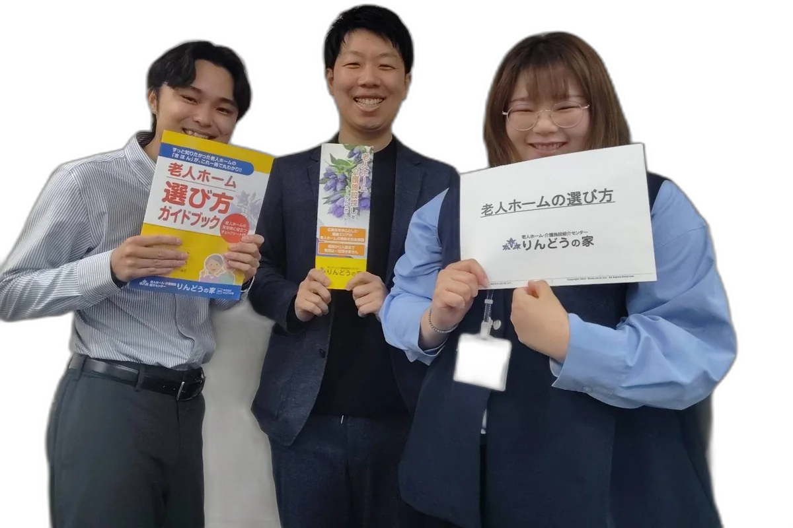
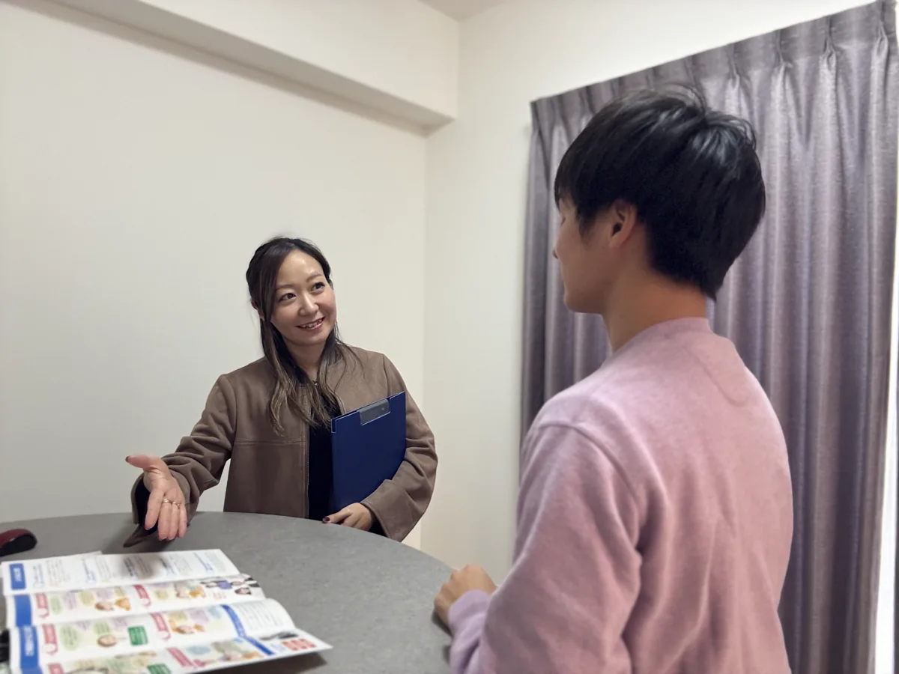
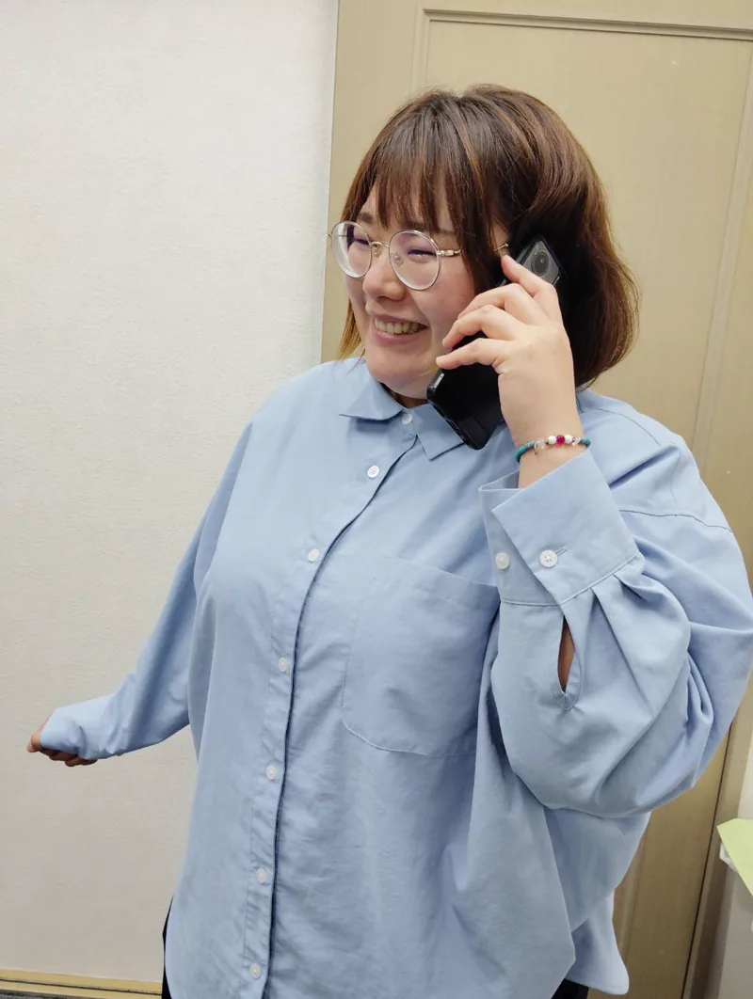
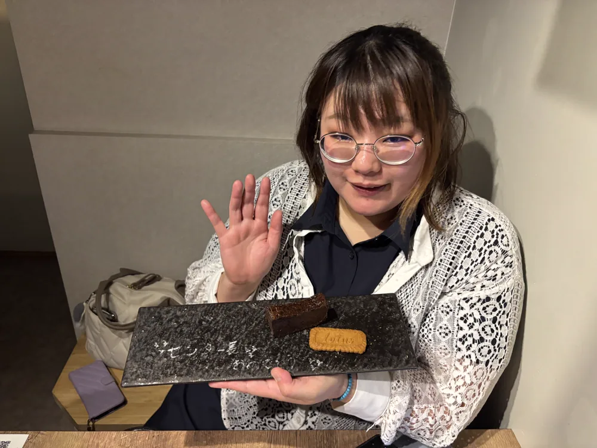
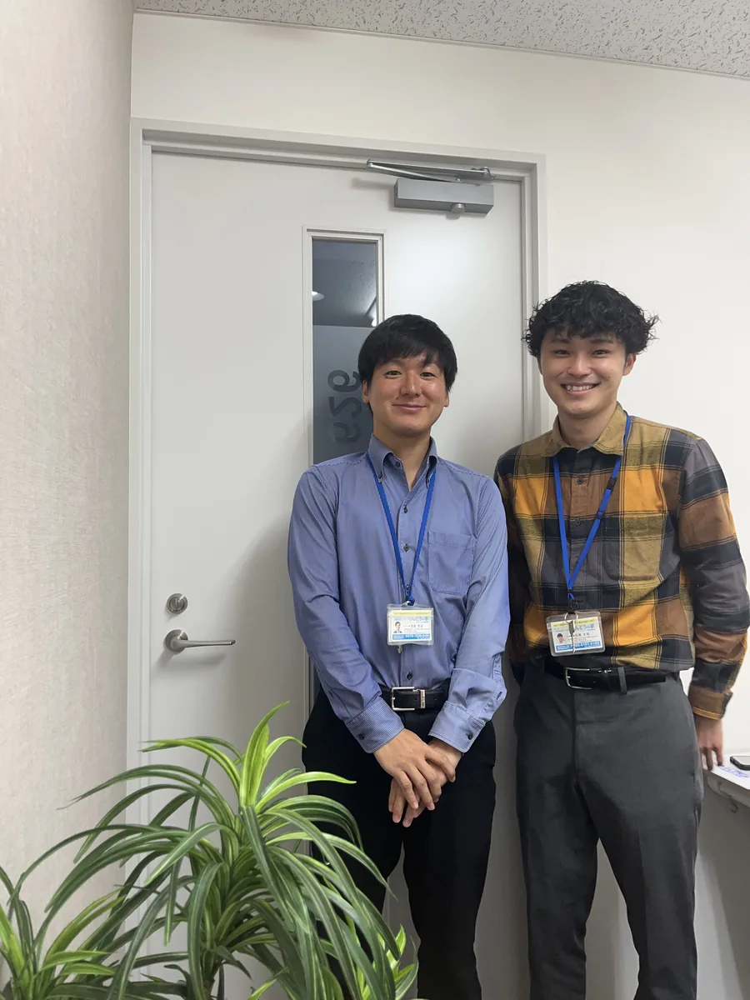
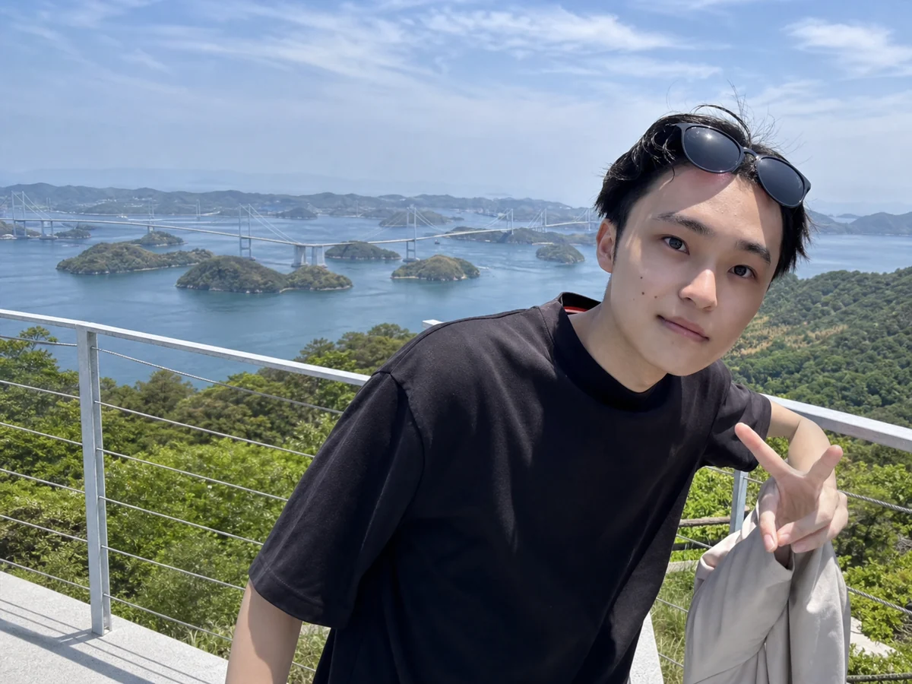
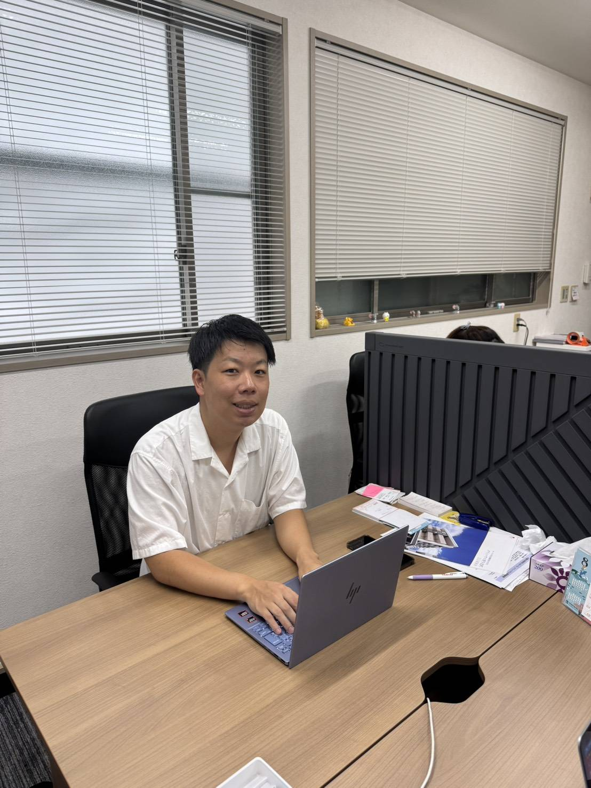
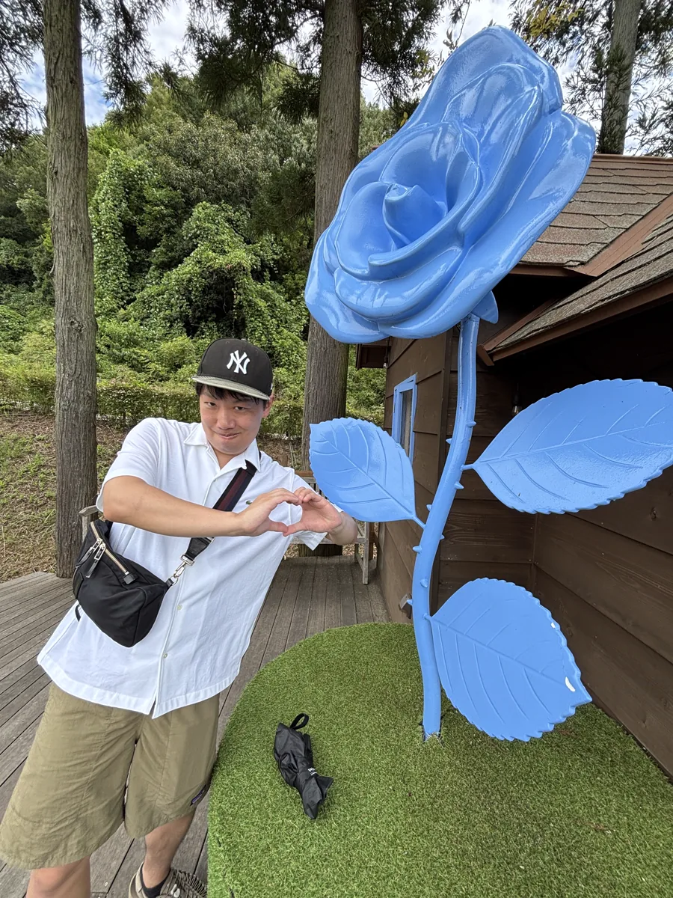

空き状況と費用を確認し、候補を絞ってご提案。見学同行も無料です。

何から始めればいいか分からない。そんな方こそ、ぜひご相談ください。
その施設探し、まるごとプロに任せられます。

パンフレットだけでは、施設の本当の姿は分かりません。りんどうの家の相談員は見学に同行し、お金・医療対応・夜間の体制など、ご家族が聞きにくいことをその場で確認します。
廿日市市・広島市周辺の空き状況と月額費用を確認し、今検討できる施設からご提案します。
施設に聞きにくいお金や医療対応の話も、相談員がその場で代わりに確認します。
相談・紹介・見学同行・入居準備の段取り・入居後のフォローまで無料。施設側からの紹介料で運営しています。
退院期日が迫った場合は、空き状況・受け入れ条件・費用の確認を優先して候補を絞ります。
退院が迫っているので、空室のある施設を早く知りたい。
特養へ入れるまでの間、予算内で暮らせる施設を探したい。
認知症が進んできたため、今の状態に合う施設へ住み替えたい。
りんどうの家へ実際に寄せられた相談・よくある相談をもとに掲載しています。ご相談事例を見る






お電話・フォームで状況とご希望をお聞きします。
条件に合う施設を、費用・空き状況つきで数件ご提案。
気になる点は相談員がその場で施設に確認します。
市役所への確認、引越し業者の手配、紹介状など必要書類の段取りを整えます。
ご入居後の困りごともご相談いただけます。
24時間の介護体制。介護度が高い方や医療的なケアが必要な方に。
生活支援を受けながら、必要な分だけ外部の介護サービスを使える住まい。
見守りと生活相談つきの賃貸住宅。自立〜軽介護の方に人気です。
認知症の方が少人数で共同生活する住まい。地域密着型です。
原則要介護3以上の方が対象。待機状況や申込条件を確認しながら探します。
比較的自立した方向けの住まい。所得や介護状態などの入居条件を確認します。
在宅復帰を目指してリハビリを受ける施設。空き状況や入所条件を確認します。
契約のない施設も含めて幅広くお探しします。施設によっては情報をご案内し、ご家族から直接お問い合わせいただく場合があります。特養・ケアハウス・老健は、待機状況や入居条件も確認しながら一緒に検討します。
退院期日と月額予算を伺い、今選べる候補を絞ってご提案します。
| 運営 | 株式会社りんどうの家（広島・福山・明石加古川の3拠点） |
|---|---|
| 広島の相談窓口 | 広島市中区舟入南2-8-15（りんどうの家 広島） |
| 電話 | 082-299-3700（受付 9:00〜18:00） |
| 届出 | 高齢者住まい事業者団体連合会（高住連）の紹介事業者届出公表制度に掲載 |